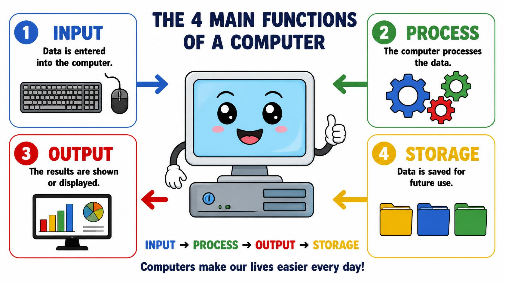

<!doctype html>
<html lang="en" class="h-full">
 <head>
  <meta charset="UTF-8">
  <meta name="viewport" content="width=device-width, initial-scale=1.0">
  <title>CS Lessons</title>
  <script src="https://cdn.tailwindcss.com/3.4.17"></script>
  <script src="https://cdn.jsdelivr.net/npm/lucide@0.263.0/dist/umd/lucide.min.js"></script>
  <script src="/_sdk/element_sdk.js"></script>
  <link href="https://fonts.googleapis.com/css2?family=JetBrains+Mono:wght@400;700&family=Source+Sans+3:wght@400;600;700&display=swap" rel="stylesheet">
  <style>
    html, body { height: 100%; margin: 0; }
    body { font-family: 'Source Sans 3', sans-serif; box-sizing: border-box; }
    code, .mono { font-family: 'JetBrains Mono', monospace; }
    .sidebar-item { transition: all 0.15s; }
    .sidebar-item:hover { background: #2d3748; }
    .sidebar-item.active { background: #1a73e8; color: #fff; }
    .code-block { 
      background: #1e1e2e; 
      color: #cdd6f4; 
      border-radius: 8px; 
      padding: 16px; 
      overflow-x: auto; 
      white-space: pre; 
      font-size: 0.85rem; 
      line-height: 1.6; 
      margin: 1rem 0;
      tab-size: 2;
    }
    .code-block .keyword { color: #cba6f7; }
    .code-block .string { color: #a6e3a1; }
    .code-block .comment { color: #6c7086; font-style: italic; }
    .code-block .type { color: #89b4fa; }
  </style>
  <script src="/_sdk/data_sdk.js" type="text/javascript"></script>
 </head>
 <body class="h-full bg-gray-900 text-gray-100">
  <div class="flex h-full w-full">
   <!-- Sidebar -->
   <aside id="sidebar" class="w-64 min-w-[256px] bg-gray-800 border-r border-gray-700 overflow-y-auto flex-shrink-0 hidden md:block">
    <div class="p-5 border-b border-gray-700">
       <div class="flex items-center gap-3 mb-3">
          <button onclick="goHome()" class="hover:bg-gray-700 p-1.5 rounded transition" title="Go Home">
            <i data-lucide="home" class="w-5 h-5"></i>
          </button>
          <h1 id="site-title" class="text-lg font-bold text-emerald-400 mono flex-1">COMPUTER SCIENCE</h1>
        </div>
    </div>
    <nav class="py-2" id="nav-list"></nav>
   </aside>
   <!-- Mobile menu button --> 
   <button id="mobile-menu-btn" class="md:hidden fixed top-3 left-3 z-50 bg-gray-800 p-2 rounded-lg border border-gray-700 hover:bg-gray-700 transition"> 
    <i data-lucide="menu" class="w-5 h-5"></i> 
   </button> 
   <!-- Mobile overlay -->
   <div id="mobile-overlay" class="hidden fixed inset-0 bg-black/60 z-40 md:hidden" onclick="toggleMobile()"></div>
   <aside id="mobile-sidebar" class="hidden fixed left-0 top-0 h-full w-64 bg-gray-800 z-50 overflow-y-auto md:hidden shadow-2xl">
    <div class="p-5 border-b border-gray-700 flex justify-between items-center">
     <div class="flex items-center gap-3">
       <button onclick="goHome()" class="hover:bg-gray-700 p-1.5 rounded transition" title="Go Home">
         <i data-lucide="home" class="w-5 h-5"></i>
       </button>
       <h1 class="text-lg font-bold text-emerald-400 mono">CS Lessons</h1>
     </div>
     <button onclick="toggleMobile()" class="hover:bg-gray-700 p-1.5 rounded transition">
      <i data-lucide="x" class="w-5 h-5"></i>
     </button>
    </div>
    <nav class="py-2" id="mobile-nav-list"></nav>
   </aside>
   <!-- Main Content -->
   <main class="flex-1 overflow-y-auto p-6 md:p-10" id="main-content"></main>
  </div>
  <script>
    const lessons = [
      // 📚 CS BASICS - 🟡 FUNDAMENTALS
      {
        title: "🟡 What is Computer?",
        content: `
          <h2>What is a Computer?</h2>
          <p>A <strong>computer</strong> is an electronic machine.</p>
          <ul>
            <li>receives information (input) </li>
            <li>processes the information </li>
            <li>gives results (output) </li>
            <li>stores information for later use </li>
              </ul>
            
          <h3>Key Characteristics</h3>
          <ul>
            <li><strong>Speed</strong> — Billions of operations per second</li>
            <li><strong>Accuracy</strong> — Perfect if programmed correctly</li>
            <li><strong>Storage</strong> — Persistent memory (HDD/SSD)</li>
            <li><strong>Versatility</strong> — Can do many different tasks</li>
            <li><strong>Diligence</strong> — Never gets tired</li>
          </ul>
          <h3>Computer Generations</h3>
          <table>
            <thead><tr><th>Generation</th><th>Years</th><th>Technology</th></tr></thead>
            <tbody>
              <tr><td>1st</td><td>1940s</td><td>Vacuum Tubes</td></tr>
              <tr><td>2nd</td><td>1950s</td><td>Transistors</td></tr>
              <tr><td>3rd</td><td>1960s</td><td>Integrated Circuits</td></tr>
              <tr><td>4th</td><td>1970s</td><td>Microprocessors</td></tr>
              <tr><td>5th</td><td>1980s-Now</td><td>AI, Quantum</td></tr>
            </tbody>
          </table>
        `
      },
      {
        title: "🟡 Hardware vs Software",
        content: `
          <h2>Hardware vs Software</h2>
          <p><strong>Hardware</strong> = Physical components you can touch.<br>
          <strong>Software</strong> = Programs/instructions that tell hardware what to do.</p>
          <h3>Hardware Components</h3>
          <table>
            <thead><tr><th>Category</th><th>Examples</th></tr></thead>
            <tbody>
              <tr><td><strong>Input</strong></td><td>Keyboard, Mouse, Microphone</td></tr>
              <tr><td><strong>Output</strong></td><td>Monitor, Speakers, Printer</td></tr>
              <tr><td><strong>Processing</strong></td><td>CPU, GPU, RAM</td></tr>
              <tr><td><strong>Storage</strong></td><td>HDD, SSD, USB</td></tr>
            </tbody>
          </table>
          <h3>Software Types</h3>
          <table>
            <thead><tr><th>Type</th><th>Examples</th></tr></thead>
            <tbody>
              <tr><td><strong>System</strong></td><td>Windows, Linux, macOS</td></tr>
              <tr><td><strong>Application</strong></td><td>Chrome, VS Code, Photoshop</td></tr>
              <tr><td><strong>Utility</strong></td><td>Antivirus, File Manager</td></tr>
            </tbody>
          </table>
          <p><strong>Analogy:</strong> Hardware = Car body/engine, Software = Driver instructions</p>
        `
      },
      {
        title: "🟡 Input / Output",
        content: `
          <h2>Input / Output (I/O)</h2>
          <p><strong>Input</strong> = Data going INTO computer.<br>
          <strong>Output</strong> = Data coming OUT OF computer.</p>
          <h3>Input Devices</h3>
          <table>
            <thead><tr><th>Device</th><th>Input Type</th></tr></thead>
            <tbody>
              <tr><td>Keyboard</td><td>Text</td></tr>
              <tr><td>Mouse</td><td>Position/Click</td></tr>
              <tr><td>Microphone</td><td>Sound</td></tr>
              <tr><td>Webcam</td><td>Video/Image</td></tr>
              <tr><td>Scanner</td><td>Documents</td></tr>
            </tbody>
          </table>
          <h3>Output Devices</h3>
          <table>
            <thead><tr><th>Device</th><th>Output Type</th></tr></thead>
            <tbody>
              <tr><td>Monitor</td><td>Visual (2D)</td></tr>
              <tr><td>Projector</td><td>Visual (large)</td></tr>
              <tr><td>Speakers</td><td>Audio</td></tr>
              <tr><td>Printer</td><td>Physical paper</td></tr>
              <tr><td>Haptic</td><td>Vibration/Force</td></tr>
            </tbody>
          </table>
          <h3>I/O Process</h3>
          <p>User → Input Device → CPU → Output Device → User</p>
        `
      },
      {
        title: "🟡 Operating System",
        content: `
          <h2>Operating System (OS)</h2>
          <p>OS is <strong>software</strong> that manages hardware and software resources. Acts as intermediary between user and computer.</p>
          <h3>OS Functions</h3>
          <ul>
            <li><strong>Process Management</strong> — Run multiple programs</li>
            <li><strong>Memory Management</strong> — Allocate RAM</li>
            <li><strong>File Management</strong> — Organize storage</li>
            <li><strong>Device Management</strong> — Control hardware</li>
            <li><strong>User Interface</strong> — GUI/CLI interaction</li>
          </ul>
          <h3>Popular OS</h3>
          <table>
            <thead><tr><th>OS</th><th>Developer</th><th>Market Share</th></tr></thead>
            <tbody>
              <tr><td>Windows</td><td>Microsoft</td><td>~75% desktop</td></tr>
              <tr><td>macOS</td><td>Apple</td><td>~15% desktop</td></tr>
              <tr><td>Linux</td><td>Community</td><td>~3% desktop, 90% servers</td></tr>
              <tr><td>Android</td><td>Google</td><td>~70% mobile</td></tr>
              <tr><td>iOS</td><td>Apple</td><td>~29% mobile</td></tr>
            </tbody>
          </table>
          <h3>Types of OS</h3>
          <ul>
            <li><strong>Batch</strong> — Jobs processed sequentially</li>
            <li><strong>Multi-tasking</strong> — Multiple programs running</li>
            <li><strong>Real-time</strong> — Guaranteed response time</li>
          </ul>
        `
      },

      // 🔵 PROGRAMMING CONCEPTS
      {
        title: "🔵 Algorithm",
        content: `
          <h2>Algorithm</h2>
          <p>An <strong>algorithm</strong> is a step-by-step procedure to solve a problem. Like a cooking recipe for computers.</p>
          <h3>Algorithm Requirements</h3>
          <ul>
            <li><strong>Finite</strong> — Must eventually stop</li>
            <li><strong>Definite</strong> — Clear, unambiguous steps</li>
            <li><strong>Input</strong> — Zero or more inputs</li>
            <li><strong>Output</strong> — At least one output</li>
            <li><strong>Effective</strong> — Basic operations only</li>
          </ul>
          <h3>Example: Find Largest Number</h3>
          <div class="code-block">Input: numbers = [3, 7, 2, 9, 1]
Algorithm:
1. Set largest = first number
2. FOR each number in list:
   IF number > largest:
       largest = number
3. Output largest

Result: 9</div>
          <h3>Real-World Example: Making Tea</h3>
          <ol>
            <li>Boil water</li>
            <li>Add tea bag to cup</li>
            <li>Pour boiling water</li>
            <li>Wait 2 minutes</li>
            <li>Remove tea bag</li>
            <li>Add milk/sugar</li>
            <li>Serve</li>
          </ol>
        `
      },
      {
        title: "🔵 Flowchart",
        content: `
          <h2>Flowchart</h2>
          <p>Visual representation of algorithm using standard symbols. Makes logic clear before coding.</p>
          <h3>Flowchart Symbols</h3>
          <table>
            <thead><tr><th>Symbol</th><th>Name</th><th>Meaning</th></tr></thead>
            <tbody>
              <tr><td>○</td><td>Terminal</td><td>Start/End</td></tr>
              <tr><td>□</td><td>Process</td><td>Action/Assignment</td></tr>
              <tr><td>◇</td><td>Decision</td><td>Yes/No question</td></tr>
              <tr><td>→</td><td>Flow</td><td>Direction of execution</td></tr>
            </tbody>
          </table>
          <h3>Login Flowchart Example</h3>
          <p><strong>Start</strong> → Enter username/password → Valid? → <strong>Yes:</strong> Login success → <strong>No:</strong> Show error → Try again? → <strong>Yes:</strong> Back to Enter → <strong>No:</strong> <strong>End</strong></p>
          <h3>Benefits</h3>
          <ul>
            <li>Visual debugging before coding</li>
            <li>Team communication</li>
            <li>Complex logic planning</li>
          </ul>
        `
      },
      {
        title: "🔵 Debugging",
        content: `
          <h2>Debugging</h2>
          <p>Finding and fixing errors in code. Essential skill for all programmers.</p>
          <h3>Types of Errors</h3>
          <table>
            <thead><tr><th>Type</th><th>Example</th><th>Caught By</th></tr></thead>
            <tbody>
              <tr><td><strong>Syntax</strong></td><td><code>print("Hello"</code></td><td>Compiler/Interpreter</td></tr>
              <tr><td><strong>Runtime</strong></td><td><code>x = 1/0</code></td><td>During execution</td></tr>
              <tr><td><strong>Logic</strong></td><td>Wrong calculation</td><td>Testing/Debugging</td></tr>
            </tbody>
          </table>
          <h3>Debugging Techniques</h3>
          <ul>
            <li><strong>Print statements</strong> — <code>print(f"x = {x}")</code></li>
            <li><strong>Debugger</strong> — Step through code line-by-line</li>
            <li><strong>Breakpoints</strong> — Pause at specific lines</li>
            <li><strong>Logs</strong> — Track execution flow</li>
            <li><strong>Unit tests</strong> — Test small pieces</li>
          </ul>
          <h3>Debugging Process</h3>
          <ol>
            <li><strong>Reproduce</strong> — Make error happen consistently</li>
            <li><strong>Isolate</strong> — Narrow down problem area</li>
            <li><strong>Fix</strong> — Correct the root cause</li>
            <li><strong>Test</strong> — Verify fix works</li>
          </ol>
        `
      },
      {
        title: "🔵 Problem Solving",
        content: `
          <h2>Problem Solving</h2>
          <p>The process of finding solutions to difficult challenges using logical thinking.</p>
          <h3>Problem Solving Steps</h3>
          <ol>
            <li><strong>Understand</strong> — What exactly is the problem?</li>
            <li><strong>Plan</strong> — Break into smaller steps (algorithm)</li>
            <li><strong>Code</strong> — Implement solution</li>
            <li><strong>Test</strong> — Check if it works</li>
            <li><strong>Refine</strong> — Optimize and fix issues</li>
          </ol>
          <h3>Common Techniques</h3>
          <table>
            <thead><tr><th>Technique</th><th>When to Use</th></tr></thead>
            <tbody>
              <tr><td>Divide & Conquer</td><td>Large problems</td></tr>
              <tr><td>Pattern Recognition</td><td>Similar past problems</td></tr>
              <tr><td>Brute Force</td><td>Small inputs</td></tr>
              <tr><td>Working Backwards</td><td>Known end result</td></tr>
            </tbody>
          </table>
          <h3>Example: Sum of Numbers</h3>
          <p><strong>Problem:</strong> Sum numbers 1 to 100<br>
          <strong>Solution:</strong> <code>sum(range(1, 101))</code> or <code>n*(n+1)/2</code></p>
        `
      },

      // 🔴 ADVANCED BASICS
      {
        title: "🔴 Data Structures (Simple Intro)",
        content: `
          <h2>Data Structures</h2>
          <p>Specialized formats for organizing and storing data efficiently.</p>
          <h3>Why Data Structures?</h3>
          <ul>
            <li><strong>Efficiency</strong> — Faster access/search</li>
            <li><strong>Organization</strong> — Logical data relationships</li>
            <li><strong>Scalability</strong> — Handle large datasets</li>
          </ul>
          <h3>Basic Types</h3>
          <table>
            <thead><tr><th>Type</th><th>Access</th><th>Insert</th><th>Delete</th><th>Use Case</th></tr></thead>
            <tbody>
              <tr><td>Array/List</td><td>O(1)</td><td>O(n)</td><td>O(n)</td><td>Sequential data</td></tr>
              <tr><td>Stack</td><td>O(1)</td><td>O(1)</td><td>O(1)</td><td>Undo/Redo</td></tr>
              <tr><td>Queue</td><td>O(1)</td><td>O(1)</td><td>O(1)</td><td>Line waiting</td></tr>
              <tr><td>Tree</td><td>O(log n)</td><td>O(log n)</td><td>O(log n)</td><td>Hierarchy</td></tr>
            </tbody>
          </table>
          <h3>Real Examples</h3>
          <ul>
            <li><strong>Browser History</strong> → Stack (Back button)</li>
            <li><strong>Printer Queue</strong> → Queue (FIFO)</li>
            <li><strong>File System</strong> → Tree (folders)</li>
          </ul>
        `
      },
      {
        title: "🔴 Binary System",
        content: `
          <h2>Binary System</h2>
          <p>Computers use <strong>binary</strong> (base-2) because hardware uses on/off electrical states (0/1).</p>
          <h3>Binary vs Decimal</h3>
          <table>
            <thead><tr><th>Decimal</th><th>Binary</th><th>Calculation</th></tr></thead>
            <tbody>
              <tr><td>0</td><td>0000</td><td>-</td></tr>
              <tr><td>1</td><td>0001</td><td>1×2⁰</td></tr>
              <tr><td>2</td><td>0010</td><td>1×2¹</td></tr>
              <tr><td>3</td><td>0011</td><td>1×2¹ + 1×2⁰</td></tr>
              <tr><td>10</td><td>1010</td><td>1×2³ + 1×2¹</td></tr>
              <tr><td>255</td><td>11111111</td><td>2⁸-1</td></tr>
            </tbody>
          </table>
          <h3>Conversion</h3>
          <div class="code-block"><span class="comment"># Decimal → Binary</span>
<span class="type">10</span> = <span class="type">1010</span>₂ (8+2)

<span class="comment"># Binary → Decimal</span>
<span class="type">1010</span>₂ = <span class="type">1</span>×2³ + <span class="type">0</span>×2² + <span class="type">1</span>×2¹ + <span class="type">0</span>×2⁰ = <span class="type">10</span>

<span class="comment"># Python</span>
<span class="keyword">print</span>(<span class="keyword">bin</span>(<span class="type">10</span>))    <span class="comment"># '0b1010'</span>
<span class="keyword">print</span>(<span class="keyword">int</span>(<span class="string">'1010'</span>, <span class="type">2</span>))  <span class="comment"># 10</span></div>
          <h3>Bytes</h3>
          <ul>
            <li><strong>Bit</strong> = 0 or 1</li>
            <li><strong>Byte</strong> = 8 bits (256 values)</li>
            <li><strong>Kilobyte</strong> = 1024 bytes</li>
          </ul>
        `
      },
      {
        title: "🔴 Computer Logic",
        content: `
          <h2>Computer Logic (Boolean Algebra)</h2>
          <p>Computers make decisions using <strong>logic gates</strong> and boolean operations (TRUE/FALSE).</p>
          <h3>Boolean Operators</h3>
          <table>
            <thead><tr><th>Operator</th><th>Symbol</th><th>Example</th><th>Result</th></tr></thead>
            <tbody>
              <tr><td>AND</td><td>&amp;&amp;</td><td>True AND False</td><td>False</td></tr>
              <tr><td>OR</td><td>||</td><td>True OR False</td><td>True</td></tr>
              <tr><td>NOT</td><td>!</td><td>NOT True</td><td>False</td></tr>
              <tr><td>XOR</td><td>^</td><td>True XOR False</td><td>True</td></tr>
            </tbody>
          </table>
          <h3>Logic Gates</h3>
          <table>
            <thead><tr><th>Gate</th><th>Inputs</th><th>Output</th></tr></thead>
            <tbody>
              <tr><td>AND</td><td>1,1</td><td>1</td></tr>
              <tr><td>OR</td><td>0,1</td><td>1</td></tr>
              <tr><td>NOT</td><td>1</td><td>0</td></tr>
              <tr><td>NAND</td><td>1,1</td><td>0</td></tr>
            </tbody>
          </table>
          <h3>Truth Tables</h3>
          <p>AND Gate:<br>
          0∧0=0, 0∧1=0, 1∧0=0, 1∧1=1</p>
          <h3>Python Example</h3>
          <div class="code-block">a = <span class="keyword">True</span>
b = <span class="keyword">False</span>

<span class="keyword">print</span>(a <span class="keyword">and</span> b)   <span class="comment"># False</span>
<span class="keyword">print</span>(a <span class="keyword">or</span> b)    <span class="comment"># True</span>
<span class="keyword">print</span>(<span class="keyword">not</span> a)     <span class="comment"># False</span></div>
        `
      }
    ];

    let currentLesson = 0;

    function buildNav(container) {
      container.innerHTML = '';
      lessons.forEach((lesson, i) => {
        const item = document.createElement('div');
        item.className = `sidebar-item px-5 py-2.5 cursor-pointer text-sm text-gray-300 ${i === currentLesson ? 'active' : ''}`;
        item.textContent = lesson.title;
        item.onclick = () => { currentLesson = i; renderAll(); toggleMobile(false); };
        container.appendChild(item);
      });
    }

    function renderContent() {
      const main = document.getElementById('main-content');
      main.innerHTML = `
        <article class="max-w-3xl mx-auto lesson-content">
          ${lessons[currentLesson].content}
          <div class="flex justify-between mt-10 pt-6 border-t border-gray-700">
            ${currentLesson > 0 ? `<button onclick="nav(-1)" class="flex items-center gap-2 px-4 py-2 bg-gray-700 hover:bg-gray-600 rounded-lg text-sm"><i data-lucide="chevron-left" class="w-4 h-4"></i> Previous</button>` : '<span></span>'}
            ${currentLesson < lessons.length - 1 ? `<button onclick="nav(1)" class="flex items-center gap-2 px-4 py-2 bg-emerald-600 hover:bg-emerald-500 rounded-lg text-sm">Next <i data-lucide="chevron-right" class="w-4 h-4"></i></button>` : '<span></span>'}
          </div>
        </article>
        <style>
          .lesson-content h2 { font-size: 1.75rem; font-weight: 700; margin-bottom: 0.75rem; color: #6ee7b7; }
          .lesson-content h3 { font-size: 1.2rem; font-weight: 600; margin-top: 1.5rem; margin-bottom: 0.5rem; color: #a7f3d0; }
          .lesson-content p { margin-bottom: 1rem; line-height: 1.7; color: #d1d5db; }
          .lesson-content ul { list-style: disc; padding-left: 1.5rem; margin-bottom: 1rem; }
          .lesson-content li { margin-bottom: 0.4rem; color: #d1d5db; line-height: 1.6; }
          .lesson-content ol { padding-left: 1.5rem; margin-bottom: 1rem; }
          .lesson-content code { background: #374151; padding: 2px 6px; border-radius: 4px; font-size: 0.85em; color: #a5b4fc; }
          .lesson-content table { width: 100%; border-collapse: collapse; margin: 1rem 0; background: #1f2937; border-radius: 0.5rem; overflow: hidden; }
          .lesson-content th, .lesson-content td { border: 1px solid #4b5563; padding: 0.75rem 1rem; text-align: left; }
          .lesson-content th { background: #374151; font-weight: 600; }
        </style>
      `;
      lucide.createIcons();
    }

    function renderAll() {
      buildNav(document.getElementById('nav-list'));
      buildNav(document.getElementById('mobile-nav-list'));
      renderContent();
    }

    // All functions properly exposed
    window.nav = function(dir) { 
      currentLesson += dir; 
      renderAll(); 
      document.getElementById('main-content').scrollTop = 0; 
    };

    window.goHome = function() { window.location.href = 'index.html'; };

    window.toggleMobile = function(force) {
      const sidebar = document.getElementById('mobile-sidebar');
      const overlay = document.getElementById('mobile-overlay');
      const show = force !== undefined ? force : !sidebar.classList.contains('hidden');
      sidebar.classList.toggle('hidden', !show);
      overlay.classList.toggle('hidden', !show);
    };

    document.addEventListener('DOMContentLoaded', function() {
      document.getElementById('mobile-menu-btn').onclick = () => toggleMobile();
      renderAll();
      lucide.createIcons();
    });

    // SDK
    const defaultConfig = { 
      site_title: 'COMPUTER SCIENCE LESSONS', 
      primary_color: '#10b981', 
      surface_color: '#1f2937', 
      text_color: '#d1d5db', 
      accent_color: '#6ee7b7', 
      bg_color: '#111827', 
      font_family: 'Source Sans 3', 
      font_size: 16 
    };

    function applyConfig(config) {
      document.getElementById('site-title').textContent = config.site_title || defaultConfig.site_title;
    }

    if (window.elementSdk) {
      window.elementSdk.init({
        defaultConfig,
        onConfigChange: async (config) => applyConfig(config),
        mapToCapabilities: (config) => ({
          recolorables: [
            { get: () => config.bg_color || defaultConfig.bg_color, set: (v) => { config.bg_color = v; window.elementSdk.setConfig({ bg_color: v }); } },
            { get: () => config.surface_color || defaultConfig.surface_color, set: (v) => { config.surface_color = v; window.elementSdk.setConfig({ surface_color: v }); } },
            { get: () => config.text_color || defaultConfig.text_color, set: (v) => { config.text_color = v; window.elementSdk.setConfig({ text_color: v }); } },
            { get: () => config.primary_color || defaultConfig.primary_color, set: (v) => { config.primary_color = v; window.elementSdk.setConfig({ primary_color: v }); } },
            { get: () => config.accent_color || defaultConfig.accent_color, set: (v) => { config.accent_color = v; window.elementSdk.setConfig({ accent_color: v }); } }
          ],
          borderables: [],
          fontEditable: { get: () => config.font_family || defaultConfig.font_family, set: (v) => { config.font_family = v; window.elementSdk.setConfig({ font_family: v }); } },
          fontSizeable: { get: () => config.font_size || defaultConfig.font_size, set: (v) => { config.font_size = v; window.elementSdk.setConfig({ font_size: v }); } }
        }),
        mapToEditPanelValues: (config) => new Map([["site_title", config.site_title || defaultConfig.site_title]])
      });
    }
  </script>
 </body>
</html>